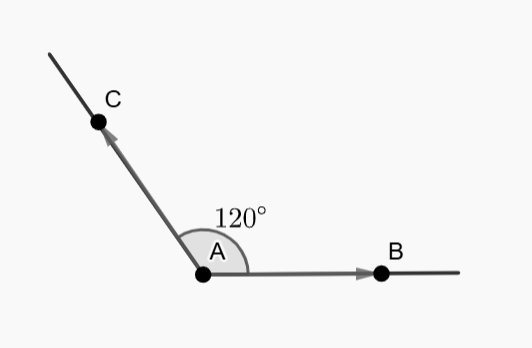

შემაჯამებელი წერა 4
დარჩენილია 30 წუთი და 60 წამი
(1) 1.
ქვემოთ ჩამოთვლილთაგან, რომელია \( a^{\frac{11}{12}} \) -ის ტოლფასი?
ა) \( \sqrt[12]{a^{132}}\)
ბ) \( \sqrt[144]{a^{132}}\)
გ) \( \sqrt[121]{a^{132}}\)
დ) \( \sqrt[11]{a^{132}}\)
(1) 2.
\( a\) რიცხვი \(100\%\)-ით აღემატება \( b\) რიცხვს, ხოლო \(b \) რიცხვი \(47\)-ზე \(90\%\)-ით ნაკლებია. რისი ტოლია \( a\) და \( b\) რიცხვების ჯამი?
ა) \(14.1\)
ბ) \(9.4\)
გ) \(13.1\)
დ) \(8.4 \)
(1) 3.
ერთი ლიტრი საღებავით შესაძლებელია \(220\) მ\(^{2}\) ფართობის მქონე კედლის შეღებვა. ოთახის კედლების საერთო ფართობია \( b\) მ\(^{2}\). ქვემოთ ჩამოთვლილთაგან, რომელი წარმოადგენს, \( P\), საღებავის რაოდენობას, რომელიც საჭიროა ოთახის კედლების ორჯერ შესაღებად?
ა) \(P= \frac{b}{110}\)
ბ) \(P=440b\)
გ) \(P=\frac{b}{220}\)
დ) \(P=220b\)
(1) 4.
ტოლფერდა მართკუთხა სამკუთხედის პერიმეტრია \(94+94\sqrt{2} \). რის ტოლია ამ სამკუთხედის კათეტის სიგრძე?
ა) \( 47\)
ბ) \( 47\sqrt{2}\)
გ) \( 94\)
დ) \( 94\sqrt{2}\)
(1) 5.
პირველი მატარებელის ვაგონების რაოდენობა 5-ით მეტია მეორე მატარებლის ვაგონების რაოდენობაზე. მას შემდეგ რაც თითოეული მატარებლიდან მოხსნეს 4 ვაგონი, პირველი მატარებლის ვაგონების რაოდენობის შეფარდება მეორესთან \( \frac{3}{2}\)-ის ტოლი გახდა. სულ რამდენი ვაგონი დარჩა ორივე მატარებლის შემადგენლობაში ერთად?
ა) 24
ბ) 25
გ) 33
დ) 35
(1) 6.
\(A\) პუნქტიდან \(AB\) და \(AC\) მიმართულებებით, რომელთა შორის კუთხე \(120^\circ\)-ია, ერთდროულად გავიდნენ ველოსიპედისტი და მოტოციკლისტი. მათი სიჩქარეები შესაბამისად \(12\) კმ/სთ და \(18\) კმ/სთ-ის ტოლია. იპოვეთ ველოსიპედისტსა და მოტოციკლისტს შორის მანძილი მოძრაობის დაწყებიდან \(20\) წუთის შემდეგ.

ა) \( 8 \) კმ
ბ) \( 4\sqrt{3}\) კმ
გ) \( 6{\sqrt{2}}\) კმ
დ) \( 2\sqrt{19}\) კმ
(1) 7.
იპოვეთ \(ABC\) სამკუთხედზე შემოხაზული წრეწირის რადიუსი, თუ \(AB=6,\) \(AC=9\) და \(\angle{A}=120^\circ\).
ა) \( \sqrt{21}\)
ბ) \( \frac{\sqrt{63}}{\sqrt{2}}\)
გ) \(\sqrt{57}\)
დ) \( \frac{21\sqrt{3}}{\sqrt{2}}\)
(1) 8.
მართკუთხა სამკუთხედის ჰიპოტენუზა და კათეტი შებამისად 4-სმ და 3-სმ-ია. იპოვეთ ამ სამკუთხედში ჩახაზული წრეწირის რადიუსის სიგრძე.
ა) \( \frac{\sqrt{7}-1}{2} \)
ბ) \( 1 \)
გ) \( \frac{5\sqrt{7}}{2} \)
დ) \( \sqrt{3} \)
(1) 9.
\(ABC\) სამკუთხედის \(AC\) ფუძის პარალელური წრფე \(AB\) და \(BC\) გვერდებს შესაბამისად \(E\) და \(F\) წერტილებში კვეთს. იპოვეთ \(EBF\) სამკუთხედის შეფარდება \(AEFC\) ოთხკუთხედის ფართობთან, თუ \(AE : EB =1 : 1 \).
ა) \(1 : 4\)
ბ) \( 1 : 2 \)
გ) \( 2 : 3\sqrt{2}\)
დ) \( 1 : 3\)
(1) 10.
25%-იანი მარილხსნარის რამდენი ლიტრი უნდა შევურიოთ 3 ლიტრ 10%-იან მარილხსნარს, რათა მივიღოთ 15%-იანი მარილხსნარი?
ა) \(1.5\ ლ. \)
ბ) \( 2\ ლ. \)
გ) \( 2.5\ ლ.\)
დ) \( 2.75\ ლ. \)
(1) 11.
რის ტოლია \( (\log_2{x^2-12x+36})(x-5)=0\) განტოლების ამონახსნთა რაოდენობა?
ა) \( 1 \)
ბ) \( 2 \)
გ) \( 3 \)
დ) \( 4\)
(1) 12.
არითმეტიკული პროგრესიის პირველი 10 წევრის ჯამი, \(S_{10}\)= 100, ხოლო პირველი 30 წევრის ჯამი \(S_{30}\)= 900. იპოვეთ აღნიშნული პროგრესიის პირველი 41 წევრის ჯამი.
ა) \( 1860 \)
ბ) \( 1640 \)
გ) \( 1900 \)
დ) \( 1722 \)
(1) 13.
პირველი მილით ცარიელი ავზი ივსება 12 წუთში, ხოლო მეორე მილით - 18 წუთში. რამდენ წუთში აივსება ავზის ნახევარი ორივე მილით?
ა) \( 3\ წთ. \)
ბ) \( 3.6\ წთ. \)
გ) \( 4.2\ წთ. \)
დ) \( 4.6\ წთ. \)
(1) 14.
მათე თავისი მანქანით კვირაში საშუალოდ 100 კმ-ს გადის. მისი მანქანა ყოველ 25 კმ-ზე 1 ლიტრ საწვავს მოიხმარს, საწვავის 1 ლიტრი კი 4 ლარი ღირს. მათე რომ კვირაში საშუალოდ m კილომეტრით ნაკლებს გადიოდეს, ის კვირაში 5 ლარის დაზოგვას შეძლებდა. ქვემოთ ჩამოთვლილთაგან, რომელი განტოლება აღწერს აღნიშნულ დამოკიდებულებას?
ა) \( \frac{4}{25}m=5 \)
ბ) \(\frac{16}{25}m=95 \)
გ) \( \frac{25}{4}m=5 \)
დ)\( \frac{4}{25}m=95 \)
(1) 15.
\(ABC\) სამკუთხედის \(AB\) გვერდზე აღებულია \(D\) და \(F\) წერტილები, ხოლო \(BC\) გვერდზე \(E\) და \(G\) წერტილები ისე, რომ \(DE\) და \(FG\) მონაკვეთები \(AC\) ფუძის პარალელურია და \(ABC\) სამკუთხედს ტოლი ფართობის მქონე სამ ფიგურად ყოფს (იხ. სურათი). იპოვეთ \(FD\) მონაკვეთის სიგრძის შეფარდება \(AB\) მონაკვეთის სიგრძესთან.
ა) \( \frac{\sqrt{3}-1}{\sqrt{2}}\)
ბ) \( \frac{\sqrt{2}}{\sqrt{3}+1}\)
გ) \( \frac{\sqrt{3}}{\sqrt{2}+1} \)
დ) \(\frac{\sqrt{2}-1}{\sqrt{3}}\)
შემოწმება